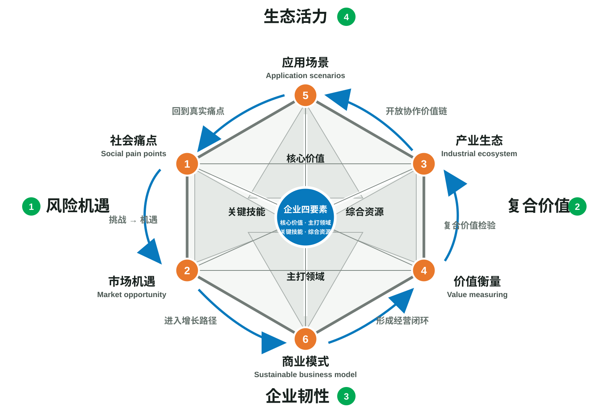

六维宝石图谱（D模型）
按照“痛点—机遇—生态—价值—场景—模式”的递进逻辑，把社会环境问题转译为能够创造复合价值的可持续商业战略。
这一方法要处理什么
按照“痛点—机遇—生态—价值—场景—模式”的递进逻辑，把社会环境问题转译为能够创造复合价值的可持续商业战略。
新版材料对方法的说明
为什么必须遵循从1到6
六个步骤并非平行清单，而是层层递进的商业逻辑链。前一步负责给后一步提供可验证的条件；打乱次序，容易造成议题脱节、价值空泛或商业模式脱离实际。可持续商业模式与战略设计：D模型，2026，D模型新版章节手稿 · 从1到6的底层逻辑
四个贯穿全程的观察维度
风险机遇、复合价值、企业韧性和生态活力不是额外的四个步骤，而是贯穿六步推演的观察视角，用来检验最终商业模式的方向、抗风险能力和生态适配性。可持续商业模式与战略设计：D模型，2026，D模型新版章节手稿 · 系统基石
构成维度
- 1. 社会痛点
从同时具有财务重大性和环境、社会影响重大性的核心需求与痛点出发，结合企业四要素锁定企业能够参与解决的实质性议题。避免把问题定义得过宽、脱离行业实际或停留在抽象道德判断。
可持续商业模式与战略设计：D模型，2026，D模型新版章节手稿 · 第一步 - 2. 市场机遇
把社会痛点转译成企业可以把握的市场空间，判断它是否能够同时产生商业、社会和环境价值，并与企业的关键技能和综合资源相匹配。
可持续商业模式与战略设计：D模型，2026，D模型新版章节手稿 · 第二步 - 3. 产业生态
把机会放入全价值链和商业—社会生态中分析，识别产业短板、协作切入口、利益相关方诉求以及可以被撬动的资源，形成跨主体的生态化合作方案。
可持续商业模式与战略设计：D模型，2026，D模型新版章节手稿 · 第三步 - 4. 价值衡量
在设计场景和商业模式之前，以经济、社会、环境相统一的复合价值检验潜在方案；如果价值方向不能成立，就返回前三步修正问题、机会或生态假设。
可持续商业模式与战略设计：D模型，2026，D模型新版章节手稿 · 第四步 - 5. 应用场景
在复合价值前置的基础上进行情景规划，围绕价值传导、价值变现、价值放大和价值共享选择最适合的应用场景，而不是只停留在产品功能设计。
可持续商业模式与战略设计：D模型，2026，D模型新版章节手稿 · 第五步 - 6. 商业模式
把前五步导入可持续商业模式，形成资源组织、伙伴协作、价值交付和收入机制，并使商业价值与社会、环境正向影响构成可持续的循环。
可持续商业模式与战略设计：D模型，2026，D模型新版章节手稿 · 第六步
贯穿全程的四个观察维度
- 风险机遇
持续检视挑战能否被转化为企业可以把握的机会。
- 复合价值
同时衡量商业价值、社会价值和环境价值。
- 企业韧性
检视方案是否增强企业应对变化和冲击的能力。
- 生态活力
检视价值链及利益相关方网络能否形成开放、协作和持续增值。
版本沿革
明确从1到6的刚性顺序，将“行业生态”升级为“产业生态”，把价值衡量前置于应用场景，并增加风险机遇、复合价值、企业韧性和生态活力四个观察维度。

原书版本包含社会痛点、市场机遇、行业生态、应用场景、价值衡量和商业模式六个维度。旧版图示及原书引文继续保留，供读者理解方法迭代。

来源与定位
D模型新版命名、六步顺序、产业生态、价值前置和四个观察维度的主要依据。
六维宝石图谱原书版本及图2-2。